Luis M. González
Con base en (Secretaría de Salud - DGIS, 2026-05-14)
| Nivel de atención: | SEGUNDO NIVEL |
| Tipología: | HOSPITAL PSIQUIÁTRICO |
| Subtipología: | NO ESPECIFICADO |
| Tipo de establecimiento: | HOSPITALIZACIÓN |
| Estrato: | URBANO |
| Estatus: | FUERA DE OPERACIÓN |
| Región: | NORESTE |
| Entidad: | VERACRUZ |
| Municipio: | ORIZABA |
| Localidad: | ORIZABA |
| Coordenadas: | 18.85078, -97.0941 |
| Domicilio: | CALLE SUR 23 Y ORIENTE 4 No. SIN NÚMERO |
| COLONIA CENTRO | |
| ORIZABA, VER | |
| CP 94300 | |
| Fecha de construcción: | 1994-12-12 |
| Fecha de inicio de operación: | 1996-12-11 |
| Propiedad del inmueble: | OTRO |
| Último movimiento: | BAJA |
| Fecha del último movimiento: | 2025-05-07 |
| Motivo de baja: | POR TRASLADO A OTRO ESTABLECIMIENTO |
| Fecha efectiva de baja: | 2024-11-29 |
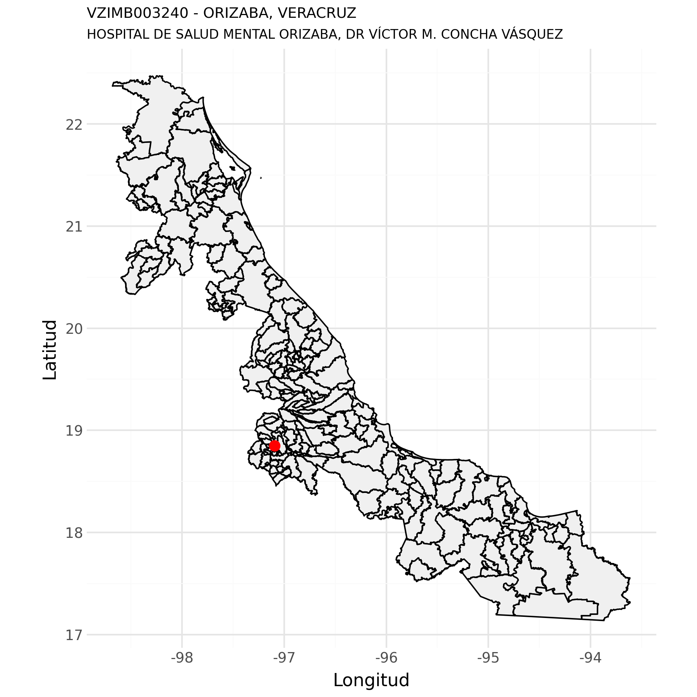
Con base en (Secretaría de Salud - DGIS, 2026-06-04a)
| clues | Año | Egresos |
|---|---|---|
| VZIMB003240 | 2021 | 332 |
| VZIMB003240 | 2022 | 387 |
| VZIMB003240 | 2023 | 648 |
| VZIMB003240 | 2024 | 573 |
| VZIMB003240 | 2025 | 149 |
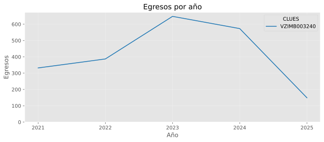
| Posición | Afección principal | Egresos |
|---|---|---|
| 1 | ESQUIZOFRENIA PARANOIDE | 23 |
| 2 | TRASTORNOS MENTALES Y DEL COMPORTAMIENTO DEBIDOS AL USO DE MÚLTIPLES DROGAS Y AL USO DE OTRAS SUSTANCIAS PSICOACTIVAS, USO NOCIVO | 18 |
| 3 | OTROS TRASTORNOS MENTALES ESPECIFICADOS DEBIDOS A LESIÓN Y DISFUNCIÓN CEREBRAL Y A ENFERMEDAD FÍSICA | 14 |
| 4 | EPISODIO DEPRESIVO MODERADO | 12 |
| 5 | TRASTORNO DEPRESIVO RECURRENTE, EPISODIO MODERADO PRESENTE | 11 |
| 6 | TRASTORNO DE LA PERSONALIDAD EMOCIONALMENTE INESTABLE | 10 |
| 7 | EPISODIO DEPRESIVO LEVE | 9 |
| 8 | TRASTORNO AFECTIVO BIPOLAR, ACTUALMENTE EN REMISIÓN | 7 |
| 9 | TRASTORNO DEPRESIVO RECURRENTE, EPISODIO LEVE PRESENTE | 4 |
| 10 | TRASTORNO PSICÓTICO AGUDO POLIMORFO, SIN SÍNTOMAS DE ESQUIZOFRENIA | 4 |
| 11 | TRASTORNO MIXTO DE ANSIEDAD Y DEPRESIÓN | 4 |
| 12 | TRASTORNO ESQUIZOAFECTIVO DE TIPO MANÍACO | 3 |
| 13 | TRASTORNOS MENTALES Y DEL COMPORTAMIENTO DEBIDOS AL USO DE MÚLTIPLES DROGAS Y AL USO DE OTRAS SUSTANCIAS PSICOACTIVAS, TRASTORNO PSICÓTICO | 3 |
| 14 | TRASTORNO AFECTIVO BIPOLAR, EPISODIO MANÍACO PRESENTE CON SÍNTOMAS PSICÓTICOS | 3 |
| 15 | TRASTORNOS MENTALES Y DEL COMPORTAMIENTO DEBIDOS AL USO DE OTROS ESTIMULANTES, INCLUIDA LA CAFEÍNA, USO NOCIVO | 2 |
| 16 | EPISODIO DEPRESIVO GRAVE SIN SÍNTOMAS PSICÓTICOS | 2 |
| 17 | TRASTORNO DELIRANTE | 2 |
| 18 | TRASTORNO DELIRANTE [ESQUIZOFRENIFORME], ORGÁNICO | 2 |
| 19 | TRASTORNO DEPRESIVO RECURRENTE, EPISODIO DEPRESIVO GRAVE PRESENTE SIN SÍNTOMAS PSICÓTICOS | 2 |
| 20 | TRASTORNOS DEL HUMOR [AFECTIVOS], ORGÁNICOS | 2 |
| 21 | OTROS | 12 |
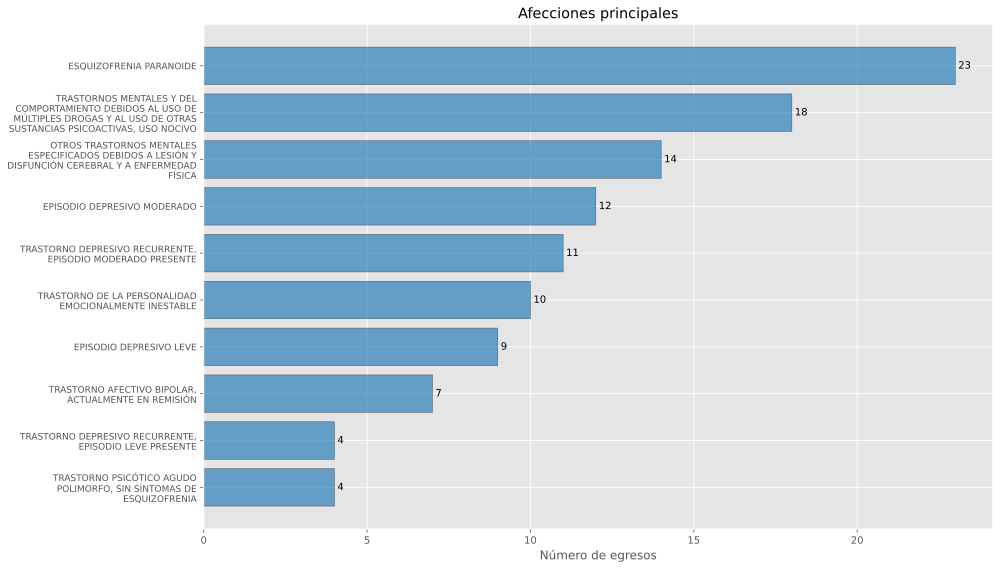
| Posición | Servicio de ingreso | Egresos |
|---|---|---|
| 1 | PSIQUIATRÍA | 147 |
| 2 | OTROS SERVICIOS DE ADULTOS | 2 |
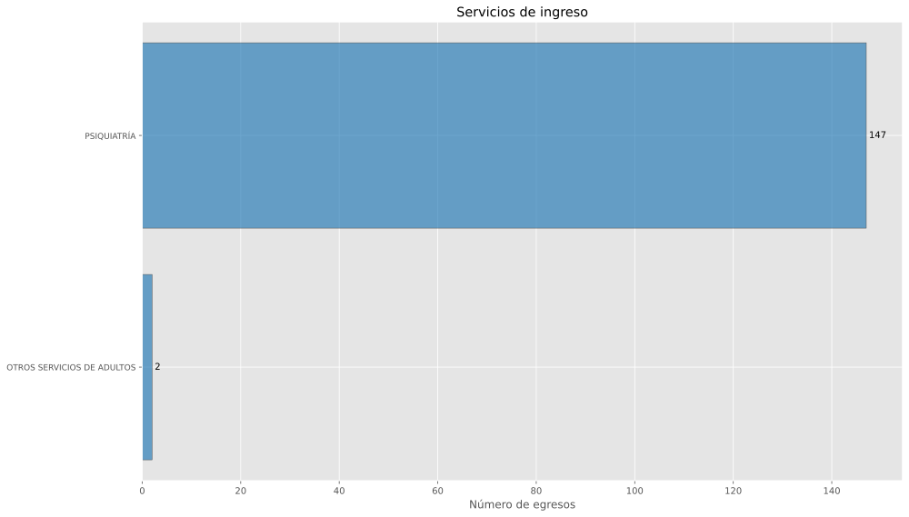
| Posición | Servicio de egreso | Egresos |
|---|---|---|
| 1 | PSIQUIATRÍA | 147 |
| 2 | OTROS SERVICIOS DE ADULTOS | 2 |
| Posición | Procedencia | Egresos |
|---|---|---|
| 1 | URGENCIAS | 133 |
| 2 | CONSULTA EXTERNA | 10 |
| 3 | REFERIDO | 4 |
| 4 | OTRO | 2 |
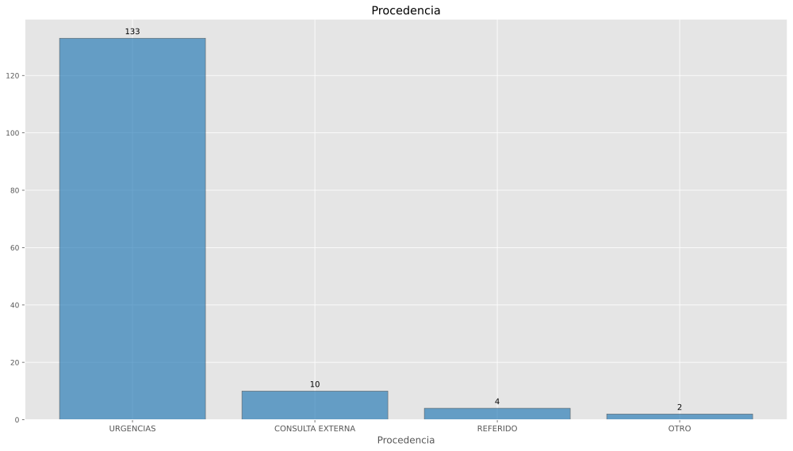
| Posición | Motivo de egreso | Egresos |
|---|---|---|
| 1 | MEJORÍA | 139 |
| 2 | TRASLADO A OTRA UNIDAD | 4 |
| 3 | VOLUNTARIO | 4 |
| 4 | FUGA | 1 |
| 5 | OTRO | 1 |
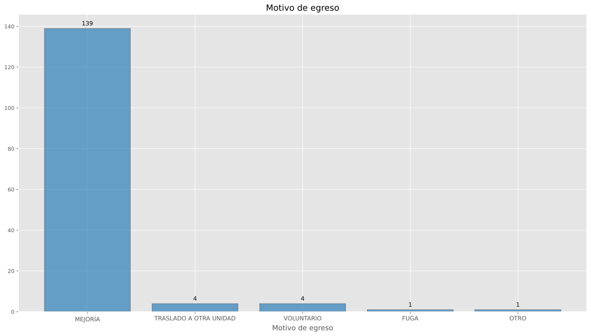
Con base en (Secretaría de Salud - DGIS, 2026-06-04b)
| clues | Año | Urgencias |
|---|---|---|
| VZIMB003240 | 2023 | 1919 |
| VZIMB003240 | 2024 | 2009 |
| VZIMB003240 | 2025 | 998 |
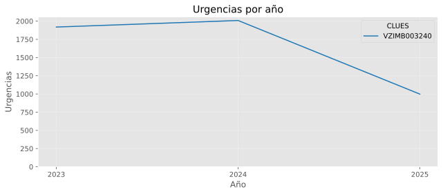
| Posición | Afección principal | Urgencias |
|---|---|---|
| 1 | TRASTORNO MIXTO DE ANSIEDAD Y DEPRESIÓN | 167 |
| 2 | OTROS TRASTORNOS MENTALES ESPECIFICADOS DEBIDOS A LESIÓN Y DISFUNCIÓN CEREBRAL Y A ENFERMEDAD FÍSICA | 88 |
| 3 | ESQUIZOFRENIA PARANOIDE | 80 |
| 4 | TRASTORNOS MENTALES Y DEL COMPORTAMIENTO DEBIDOS AL USO DE MÚLTIPLES DROGAS Y AL USO DE OTRAS SUSTANCIAS PSICOACTIVAS, USO NOCIVO | 72 |
| 5 | TRASTORNOS MENTALES Y DEL COMPORTAMIENTO DEBIDOS AL USO DE MÚLTIPLES DROGAS Y AL USO DE OTRAS SUSTANCIAS PSICOACTIVAS, TRASTORNO PSICÓTICO | 61 |
| 6 | EPISODIO DEPRESIVO GRAVE SIN SÍNTOMAS PSICÓTICOS | 57 |
| 7 | EPISODIO DEPRESIVO MODERADO | 55 |
| 8 | TRASTORNO DE ANSIEDAD GENERALIZADA | 46 |
| 9 | TRASTORNO DEPRESIVO RECURRENTE, EPISODIO DEPRESIVO GRAVE PRESENTE SIN SÍNTOMAS PSICÓTICOS | 36 |
| 10 | TRASTORNO DE LA PERSONALIDAD EMOCIONALMENTE INESTABLE | 29 |
| 11 | EPILEPSIA Y SÍNDROMES EPILÉPTICOS IDIOPÁTICOS RELACIONADOS CON LOCALIZACIONES (FOCALES)(PARCIALES) Y CON ATAQUES DE INICIO LOCALIZADO | 24 |
| 12 | TRASTORNO PSICÓTICO AGUDO POLIMORFO, SIN SÍNTOMAS DE ESQUIZOFRENIA | 20 |
| 13 | TRASTORNO DEPRESIVO RECURRENTE, EPISODIO MODERADO PRESENTE | 18 |
| 14 | TRASTORNOS MENTALES Y DEL COMPORTAMIENTO DEBIDOS AL USO DE ALCOHOL, USO NOCIVO | 18 |
| 15 | EPISODIO DEPRESIVO GRAVE CON SÍNTOMAS PSICÓTICOS | 16 |
| 16 | TRASTORNOS DEL HUMOR [AFECTIVOS], ORGÁNICOS | 10 |
| 17 | TRASTORNOS MENTALES Y DEL COMPORTAMIENTO DEBIDOS AL USO DE OTROS ESTIMULANTES, INCLUIDA LA CAFEÍNA, TRASTORNO PSICÓTICO | 10 |
| 18 | TRASTORNOS MENTALES Y DEL COMPORTAMIENTO DEBIDOS AL USO DE OTROS ESTIMULANTES, INCLUIDA LA CAFEÍNA, USO NOCIVO | 9 |
| 19 | TRASTORNO DELIRANTE [ESQUIZOFRENIFORME], ORGÁNICO | 8 |
| 20 | TRASTORNO DE ESTRÉS POSTRAUMÁTICO | 8 |
| 21 | OTROS | 166 |
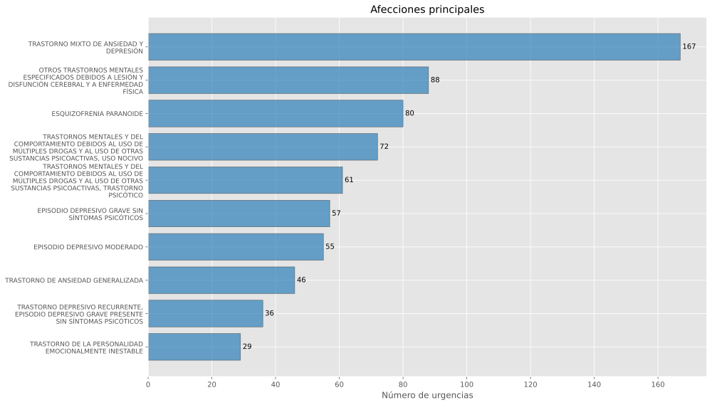
| Posición | Motivo de urgencia | Urgencias |
|---|---|---|
| 1 | MÉDICA | 998 |
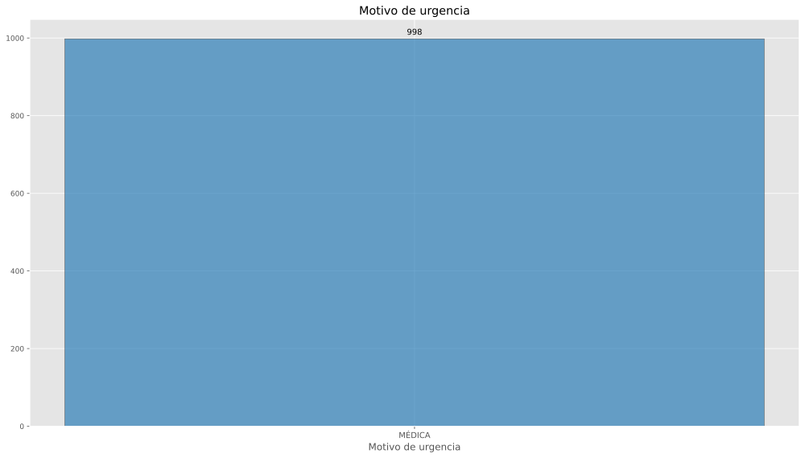
| Posición | Tipo de urgencia | Urgencias |
|---|---|---|
| 1 | URGENCIA CALIFICADA | 951 |
| 2 | URGENCIA NO CALIFICADA | 47 |
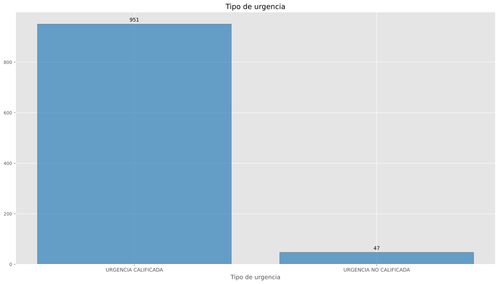
| Posición | Tipo de cama | Urgencias |
|---|---|---|
| 1 | SIN CAMA | 789 |
| 2 | CAMA DE OBSERVACION | 204 |
| 3 | NO ESPECIFICADO | 4 |
| 4 | CAMA DE CHOQUE | 1 |
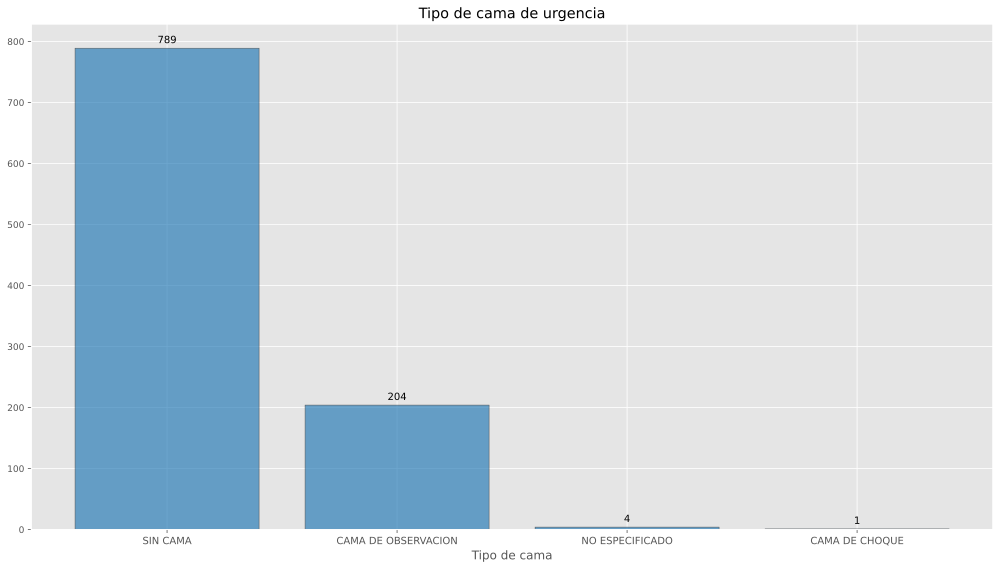
| Posición | Enviado a | Urgencias |
|---|---|---|
| 1 | CONSULTA EXTERNA | 640 |
| 2 | HOSPITALIZACIÓN | 284 |
| 3 | SALE POR VOLUNTAD PROPIA | 32 |
| 4 | TRASLADO A OTRA UNIDAD | 32 |
| 5 | DOMICILIO | 10 |
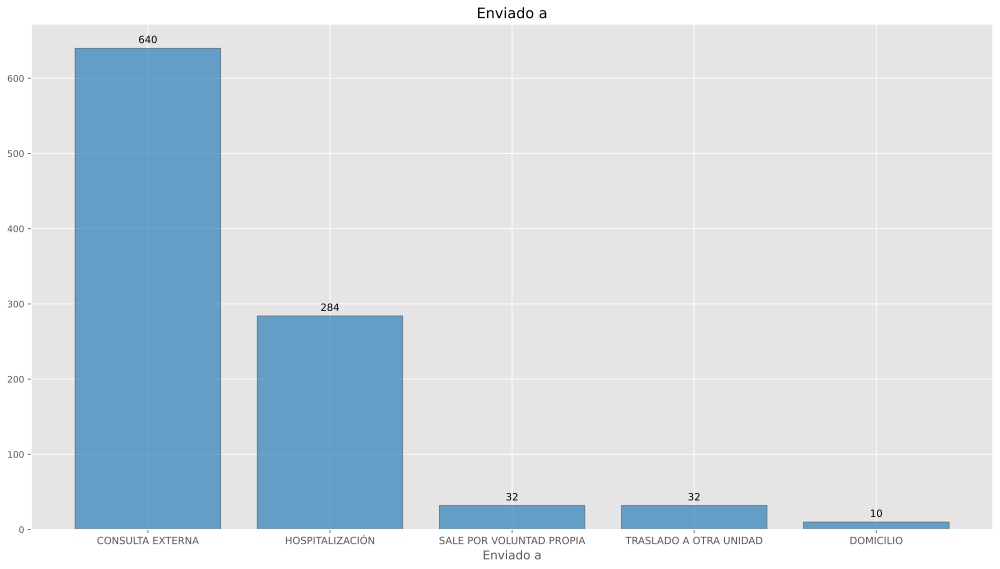
| Posición | Procedimiento quirúrgico | Urgencias |
|---|---|---|
| 1 | REDUCCIÓN CERRADA DE FRACTURA SIN FIJACIÓN INTERNA RADIO Y CÚBITO | 1 |
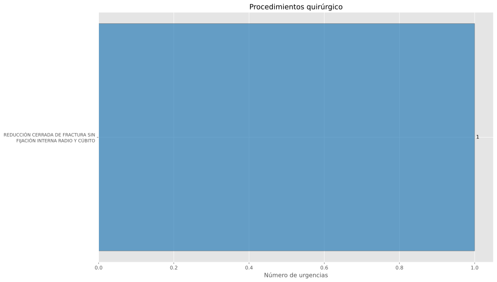
| Posición | Procedimiento terapéutico | Urgencias |
|---|---|---|
| 1 | OTRA TERAPIA PSIQUIÁTRICA CON FÁRMACOS | 166 |
| 2 | TERAPIA NEUROLÉPTICA | 65 |
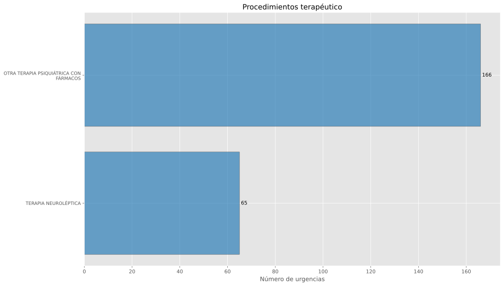
| Posición | Procedimiento de diagnóstico | Urgencias |
|---|---|---|
| 1 | DETERMINACIÓN DE ESTADO MENTAL PSIQUIÁTRICO | 599 |
| 2 | EVALUACIÓN PSIQUIÁTRICA PARA INTERNAMIENTO | 291 |
| 3 | OTRA ENTREVISTA Y EVALUACIÓN PSIQUIÁTRICAS | 247 |
| 4 | CONSULTA PSIQUIÁTRICA RUTINARIA, NO ESPECIFICADA DE OTRA MANERA | 4 |
| 5 | RECONOCIMIENTO MÉDICO GENERAL | 2 |
| 6 | ENTREVISTA Y EVALUACIÓN DIAGNÓSTICAS, NO ESPECIFICADAS DE OTRA MANERA | 1 |
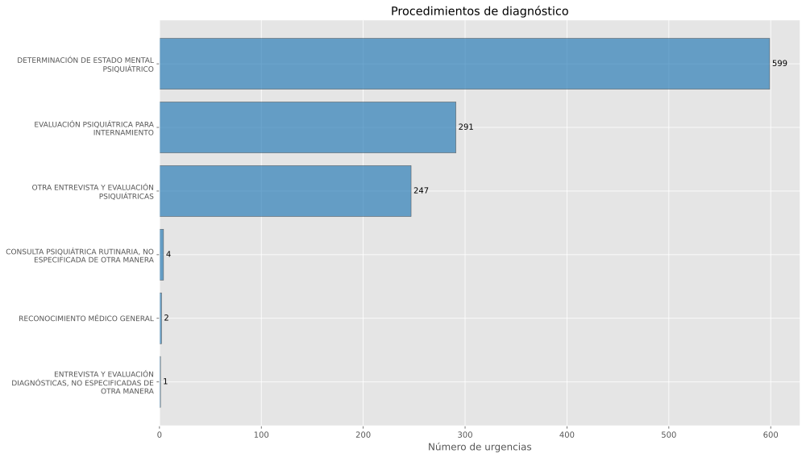
Descargar VZIMB003240.pdf